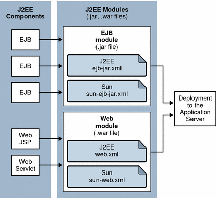

To disable an application or module in the Admin Console
To disable an application or module in the Admin ConsoleThis chapter describes Sun Java™ System Application Server modules and how these modules are assembled separately or together in an application. This chapter also describes tools for assembly and deployment.
The Application Server modules and applications include Java™ Platform, Enterprise Edition (Java EE™ platform) standard features and Application Server specific features. Only Application Server specific features are described in detail in this chapter.
The following topics are presented in this chapter:
Application assembly (also known as packaging) is the process of combining discrete components of an application into a single unit that can be deployed to a Java-EE-compliant application server. A package can be classified either as a module or as a full-fledged application. This section covers the following topics:
A Java EE module is a collection of one or more Java EE components that execute in the same container type (for example, web or EJB) with annotations or deployment descriptors of that type. One descriptor is Java EE standard, the other is Application Server specific. Annotations can be used instead of Java EE standard descriptors.
Types of Java EE modules are as follows:
Web Application Archive (WAR): A web application is a collection of servlets, HTML pages, classes, and other resources that can be bundled and deployed to several Java EE application servers. A WAR file can consist of the following items: servlets, JSP files, JSP tag libraries, utility classes, static pages, client-side applets, beans, bean classes, and annotations or deployment descriptors (web.xml and sun-web.xml).
EJB JAR File: The EJB JAR file is the standard format for assembling enterprise beans. This file contains the bean classes (home, remote, local, and implementation), all of the utility classes, and annotations or deployment descriptors (ejb-jar.xml and sun-ejb-jar.xml). If the EJB component is a version 2.1 or earlier entity bean with container managed persistence, a .dbschema file and a CMP mapping descriptor, sun-cmp-mapping.xml, must be included as well.
Application Client Container JAR File: An ACC client is an Application Server specific type of Java EE client. An ACC client supports the standard Java EE Application Client specifications, and in addition, supports direct access to the Application Server. Its deployment descriptors are application-client.xml and sun-application-client.xml.
Resource RAR File: RAR files apply to Java EE CA connectors. A connector extends the EJB container to allow access to external systems much like a device driver provides access to a peripheral device from a process hosted by an operating system. It is a portable way of allowing EJB components to access a foreign enterprise system. Each Application Server connector has annotations or a Java EE XML file, ra.xml.
Package definitions must be used in the source code of all modules so the class loader can properly locate the classes after the modules have been deployed.
Because the information in a deployment descriptor is declarative, it can be changed without requiring modifications to source code. At run time, the Java EE server reads this information and acts accordingly.
The Application Server also supports lifecycle modules. See Chapter 12, "Developing Lifecycle Listeners," in Sun Java System Application Server Platform Edition 9.0 2006Q1 Developer's Guide for more information.
EJB JAR and Web modules can also be deployed separately, outside of any application, as in the following figure. EJB components are assembled in a JAR file with ejb-jar.xml and sun-ejb-jar.xml deployment descriptors. Web components are assembled in a WAR file with web.xml and sun-web.xml deployment descriptors. Both module types are deployed to the Application Server.
Figure 1-1 Module assembly and deployment
A Java EE application is a logical collection of one or more Java EE modules tied together by application deployment descriptors. Components can be assembled at either the module or the application level. Components can also be deployed at either the module or the application level.
The following diagram illustrates how components are assembled into modules and then assembled into an Application Server application and deployed. EJB components are assembled in a JAR file with ejb-jar.xml and sun-ejb-jar.xml deployment descriptors. Web components are assembled in a WAR file with web.xml and sun-web.xml deployment descriptors. An application client is assembled in a JAR file with application-client.xml and sun-application-client.xml deployment descriptors. A resource adapter is assembled in a RAR file with a ra.xml deployment descriptor. All modules are assembled in an EAR file and deployed to the Application Server.
Figure 1-2 Application assembly and deployment

Each module has an Application Server deployment descriptor and a Java EE deployment descriptor. The Application Server uses the deployment descriptors to deploy the application components and to register the resources with the Application Server.
An application consists of one or more modules, an optional Application Server deployment descriptor, and a required Java EE application deployment descriptor. All items are assembled, using the Java ARchive (.jar) file format, into one file with an extension of .ear.
The Application Server supports applications and modules annotated according to the following specifications:
JSR 250 Common Annotation Specification (http://www.jcp.org/en/jsr/detail?id=250)
JSR 181 Annotation for Web Services Specification (http://www.jcp.org/en/jsr/detail?id=181)
EJB 3.0 Specification (http://www.jcp.org/en/jsr/detail?id=220)
The following annotation and deployment descriptor combinations are supported:
Java EE applications or modules can be packaged with full Java EE 5.0 compliant standard and runtime deployment descriptors. If the standard deployment descriptors have specified the attribute full, annotations in the application or module are ignored.
Java EE applications or modules can be fully annotated with metadata defined by the listed specifications. Annotation eliminates the need for Java EE standard deployment descriptors. In most cases, the Application Server deployment descriptors are also optional.
Java EE applications or modules can be partially annotated with some deployment information in standard deployment descriptors. In case of conflicts, deployment descriptor values supersede the annotated metadata, but a warning message is logged.
To check the correctness of annotations or deployment descriptors prior to deployment, see The Verifier Utility.
Java EE standard deployment descriptors are described in the Java EE specification, v5. You can find the specification at http://java.sun.com/products/.
The following table shows where to find more information about the most commonly used Java EE standard deployment descriptors.
Table 1-1 Java EE Standard Descriptors
Deployment Descriptor | Where to Find More Information |
|---|---|
Java Platform Enterprise Edition Specification, v5, Chapter 8, "Application Assembly and Deployment - Java EE:application XML DTD" | |
Java Servlet Specification, v2.5 Chapter 13, "Deployment Descriptor," and JavaServer Pages Specification, v2.1, Chapter 7, "JSP Pages as XML Documents," and Chapter 5, "Tag Extensions" | |
Enterprise JavaBeans Specification, v3.0, Chapter 16, "Deployment Descriptor" | |
Java Platform Enterprise Edition Specification, v5, Chapter 9, "Application Clients - Java EE:application-client XML DTD" | |
Java Enterprise Edition, J2EE Connector Architecture Specification, v1.5, Chapter 10, "Packaging and Deployment." |
The Application Server uses additional deployment descriptors for configuring features specific to the Application Server. The sun-application-client.xml and sun-acc.xml files are required; all the others are optional.
To check the correctness of these deployment descriptors prior to deployment, see The Verifier Utility.
For complete descriptions of these files, see Appendix A, Deployment Descriptor Files.
Names of applications and individually deployed EJB JAR, WAR, and connector RAR modules must be unique within an Application Server domain. Modules of the same type within an application must have unique names. In addition, for entity beans that use CMP,.dbschema file names must be unique within an application.
If you do not explicitly specify a name, the default name is the first portion of the file name (without the .war or .jar extension). Modules of different types can have the same name within an application, because the directories holding the individual modules are named with _jar, _war and _rar suffixes. This is the case when you use the Admin Console or the asadmin command. See Tools for Deployment.
You can specify a name in one of these ways:
If deploying using the Admin Console, specify the name in the Application Name field.
If deploying using the asadmin deploy command, the default name of the application or module is the prefix of the JAR file that you are deploying. For example, for the hello.war file, the Web application name is hello. To override the default name, specify the --name option.
Make sure your package and file names do not contain spaces or characters that are illegal for your operating system.
Using a Java package-like naming scheme is recommended for module filenames, EAR filenames, module names as found in the <module-name> portion of the ejb-jar.xml files, and EJB names as found in the <ejb-name> portion of the ejb-jar.xml files. The use of this package-like naming scheme ensures that name collisions do not occur. The benefits of this naming practice apply not only to the Application Server, but to other Java EE application servers as well.
JNDI lookup names for EJB components must also be unique. Establishing a consistent naming convention might help. For example, appending the application name and the module name to the EJB name is one way to guarantee unique names. In this case, mycompany.pkging.pkgingEJB.MyEJB would be the JNDI name for an EJB in the module pkgingEJB.jar, which is packaged in the application pkging.ear.
If you are writing your own JSR 88 client to deploy applications to the Application Server using the following API, the name of the application is taken from the display-name entry in the Java EE standard deployment descriptor, because there is no file name in this case. If the display-name entry is not present, the Application Server creates a temporary file name and uses that name to deploy the application.
javax.enterprise.deploy.spi.DeploymentManager.distribute(Target[], InputStream, InputStream) |
Neither the Admin Console nor the asadmin command uses this API.
Note - Use of the following JSR 88 API is preferred. In this case, the name is derived from the file name as previously described.
javax.enterprise.deploy.spi.DeploymentManager.distribute(Target[], File, File) |
For more information about JSR 88, see the JSR 88 page at http://jcp.org/en/jsr/detail?id=88.
When you deploy an application, the application is expanded from the EAR file to an open directory structure. The directories holding the individual modules are named with _jar, _war and _rar suffixes. If you use the asadmin deploydir command to deploy a directory instead of an EAR file, your directory structure must follow this same convention. Module and application directory structures follow the structure outlined in the Java EE specification.
Assembling (or packaging) modules and applications in Application Server conforms to all of the customary Java-EE-defined specifications. The only difference is that when you assemble in Application Server, you include Application Server specific deployment descriptors that enhance the functionality of the Application Server.
For example, when you assemble an EJB JAR module, you annotate or create two deployment descriptor files with these names: ejb-jar.xml and sun-ejb-jar.xml. If the EJB component is an entity bean with container-managed persistence, you can also create a .dbschema file and a sun-cmp-mapping.xml file. For more information about sun-ejb-jar.xml and sun-cmp-mapping.xml, see Appendix A, Deployment Descriptor Files.
Note - According to the Java EE specification, section 8.1.1.2, "Dependencies," you cannot package utility classes within an individually deployed EJB module. Instead, package the EJB module and utility JAR within an application using the JAR Extension Mechanism Architecture. For other alternatives, see Chapter 2, "Class Loaders," in Sun Java System Application Server Platform Edition 9.0 2006Q1 Developer's Guide.
The Application Server provides these tools for assembling and verifying a module or an application:
The asant utility can help you assemble and deploy modules and applications. For details, see Chapter 3, "The asant Utility," in Sun Java System Application Server Platform Edition 9.0 2006Q1 Developer's Guide.
You can use the NetBeans™ IDE (integrated development environment) to assemble J2EE applications and modules. The Platform Edition of the Application Server is bundled with the NetBeans 5 IDE. For more information about using the NetBeans IDE, see http://www.netbeans.org.
The verifier utility validates Java EE annotations and deployment descriptors and Application Server specific deployment descriptors against their corresponding DTD schema files. It gives errors and warnings if a module or application is not Java EE and Application Server compliant. You can verify deployment descriptors in EAR, WAR, RAR, and JAR files.
The verifier tool is not simply an XML syntax verifier. Rules and interdependencies between various elements in the deployment descriptors are verified. Where needed, user application classes are introspected to apply validation rules.
The verifier is integrated into Application Server deployment and the asant task "sun-appserv-deploy" in Sun Java System Application Server Platform Edition 9.0 2006Q1 Developer's Guide. You can also run it as a stand-alone utility from the command line. The verifier utility is located in the install-dir/bin directory.
You can run the verifier during Application Server deployment using the Admin Console or the asadmin deploy command with the --verify="true" option (see The asadmin Deployment Commands and The Admin Console Deployment Pages). In these cases, the output of the verifier is written to the tempdir/verifier-results/ directory, where tempdir is the temporary directory defined in the operating system. Deployment fails if any failures are reported during the verification process. The verifier also logs information about verification progress to the standard output.
For details on all the assertions tested by the verifier, see the assertions documentation provided at http://java.sun.com/j2ee/avk/index.html.
Tip - Using the verifier tool can help you avoid runtime errors that are difficult to debug.
This section covers the following topics:
The verifier tool's syntax is as follows:
verifier [options] file |
The file can be an EAR, WAR, RAR, or JAR file.
The following table shows the options for the verifier tool.
Table 1-2 Verifier Options
Short Form | Long Form | Description |
|---|---|---|
-v | --verbose | Turns on verbose mode. In verbose mode, the status of each run of each test is displayed on the verifier console. |
-d output-dir | --destdir output-dir | Writes test results to the output-dir, which must already exist. By default, the results files are created in the current directory. |
-D domain-dir | --domain domain-dir | Specifies the absolute path to the domain directory. This option is ignored if the -p option is used. The default domain directory isinstall-dir/domains/domain1. |
-rlevel | --reportlevel level | Sets the output report level to one of the following values:
|
-t | --timestamp | Appends a timestamp to the output file name. The format of the timestamp is yyyyMMddhhmmss. |
-? | --help | Displays help for the verifier command. If you use this option, you do not need to specify an EAR, WAR, RAR, or JAR file. |
-V | --version | Displays the verifier tool version. If you use this option, you do not need to specify an EAR, WAR, RAR, or JAR file. |
-p | --portability | Verifies portable features only. By default, the verifier also checks correct usage of Application Server features in the sun-*.xml deployment descriptor files. |
-a | --app | Runs only the application tests. |
-A | --appclient | Runs only the application client tests. |
-c | --connector | Runs only the connector tests. |
-e | --ejb | Runs only the EJB tests. |
-w | --web | Runs only the web module tests. |
-s | --webservices | Runs only the web service tests. |
-l | --webservicesclient | Runs only the web service client tests. |
For example, the following command runs the verifier on the ejb.jar file with default settings:
verifier ejb.jar |
The results files are ejb.jar.txt and ejb.jar.xml.
For a more complex example, the following command runs the verifier on the ejb.jar file in portability mode displaying only failures and with a timestamp:
verifier -p -rf -t ejb.jar |
The results files are ejb.jartimestamp.txt and ejb.jartimestamp.xml. The format of the timestamp is yyyyMMddhhmmss.
If the verifier runs successfully and no verification errors occurred, a result code of 0 is returned. A nonzero error code is returned if errors occurred or the verifier fails to run.
You can integrate the verifier into an Ant build file as a target and use the Ant call feature to call the target each time an application or module is assembled. You can use any of the arguments described in Table 1-2. Example code for an Ant verify target is as follows:
<?xml version="1.0" encoding="iso-8859-1"?>
<project name="Verifier Launcher" default="verify">
<target name="verify" description="verify using verifier script">
<exec executable="install-dir/bin/verifier"
failonerror="true" vmlauncher="false">
<arg line="-d /tmp path-to-app"/>
</exec>
</target>
</project>
|
Here is a sample results XML file:
<static-verification> <ejb> <failed> <test> <test-name> tests.ejb.session.TransactionTypeNullForContainerTX </test-name> <test-assertion> Session bean with bean managed transaction demarcation test </test-assertion> <test-description> For [ TheGreeter ] Error: Session Beans [ TheGreeter ] with [ Bean ] managed transaction demarcation should not have container transactions defined. </test-description> </test> </failed> </ejb> ... </static-verification> |
Here is a sample results TXT file:
--------------------------- STATIC VERIFICATION RESULTS --------------------------- ---------------------------------- NUMBER OF FAILURES/WARNINGS/ERRORS ---------------------------------- # of Failures : 1 # of Warnings : 0 # of Errors : 0 ----------------------------- RESULTS FOR EJB-RELATED TESTS ----------------------------- -------------- FAILED TESTS : -------------- Test Name : tests.ejb.ejb30.BusinessIntfInheritance Test Assertion : A business interface must not extend javax.ejb.EJBObject or javax.ejb.EJBLocalObject. Please refer to EJB 3.0 Simplified API Section #3.2 for further information. Test Description : For [ sessionApp#session-ejb.jar#HelloEJB ] [ com.sun.sample.session.Hello ] extends either javax.ejb.EJBObject or javax.ejb.EJBLocalObject. ---------------------------------- END OF STATIC VERIFICATION RESULTS ---------------------------------- |
This section describes the different ways to deploy Java EE applications and modules to the Application Server. It covers the following topics:
If an error occurs during deployment, the application or module is not deployed. If a module within an application contains an error, the entire application is not deployed. This prevents a partial deployment that could leave the server in an inconsistent state.
After installing the Application Server and starting a domain, you can deploy (install) Java EE applications and modules. During deployment and as the application is changed, an application or module can go through the following stages:
Initial Deployment
Before deploying an application or module, start the domain.
Deploy (install) an application or module. Because applications and modules are packaged in archive files, specify the archive file name during deployment.
Deployment is dynamic: you don't need to restart the server instance after deploying application or module for applications to be available. If you do restart, all deployed applications and modules are still deployed and available.
Enabling or Disabling
By default, a deployed application or module is enabled, which means that it is runnable and can be accessed by clients. To prevent access, disable the application or module. A disabled application or module is not uninstalled from the domain and can be easily enabled after deployment. For more information, see Disabling a Deployed Application or Module.
Redeployment
To replace a deployed application or module, redeploy it. Redeploying automatically undeploys the previously deployed application or module and replaces it with the new one.
Undeployment
To uninstall an application or module, undeploy it.
This section covers the following topics related to deployment for development:
Note - You can overwrite a previously deployed application by using the --force option of asadmin deploy or by checking the appropriate box in the Admin Console during deployment. However, you must remove a preconfigured resource before you can update it.
You can deploy, redeploy, and undeploy an application or module without restarting the server. This is called dynamic deployment. Although primarily for developers, dynamic deployment can be used in operational environments to bring new applications and modules online without requiring a server restart.
Whenever a redeployment is done, the sessions at that transit time become invalid. The client must restart the session.
You can disable a deployed application or module without removing it from the server. Disabling an application makes it inaccessible to clients.
To disable an application or module using the asadmin disable command, see the Sun Java System Application Server Platform Edition 9.0 2006Q1 Reference Manual.
To disable an application or module in the Admin Console
Open the Applications component.
Go to the page for the type of application or module.
For example, for a web application, go to the Web Applications page.
Click on the name of the application or module you wish to disable.
Uncheck the Status Enabled box.
For details, see the Sun Java System Application Server Platform Edition 9.0 Administration Guide.
If dynamic reloading is enabled (it is by default), you do not have to redeploy an application or module when you change its code or deployment descriptors. All you have to do is copy the changed JSP or class files into the deployment directory for the application or module. The server checks for changes periodically and redeploys the application, automatically and dynamically, with the changes.
This is useful in a development environment, because it allows code changes to be tested quickly. In a production environment, however, dynamic reloading might degrade performance. In addition, whenever a reload is done, the sessions at that transit time become invalid. The client must restart the session.
You can also use the sun-appserv-update task with the asant utility to update an application or module. See Chapter 3, "The asant Utility," in Sun Java System Application Server Platform Edition 9.0 2006Q1 Developer's Guide.
To enable dynamic reloading in the Admin Console
Select the Application Settings component under the relevant configuration.
Check the Reload Enabled box to enable dynamic reloading.
Enter a number of seconds in the Reload Poll Interval field.
This sets the interval at which applications and modules are checked for code changes and dynamically reloaded. The default is 2.
For details, see the Sun Java System Application Server Platform Edition 9.0 Administration Guide.
To reload code or deployment descriptor changes
Create an empty file named .reload at the root of the deployed application or module.
For an application:
domain-dir/applications/j2ee-apps/app-name/.reload |
For an individually deployed module:
domain-dir/applications/j2ee-modules/module-name/.reload |
Explicitly update the .reload file's timestamp (touch .reload in UNIX) each time you make changes.
Automatic deployment, also called autodeployment, involves copying an application or module file (JAR, WAR, RAR, or EAR) into a special directory, where it is automatically deployed by the Application Server. To undeploy an automatically deployed application or module, simply remove its file from the special autodeployment directory. This is useful in a development environment, because it allows new code to be tested quickly.
Autodeployment of a web services JSR 181 annotated file is supported. For more information, see JSR 181 and Chapter 6, "Developing Web Services," in Sun Java System Application Server Platform Edition 9.0 2006Q1 Developer's Guide.
Autodeployment is enabled by default.
To enable and configure or to disable autodeployment
Select the Application Settings component under the relevant configuration.
Check the Auto Deploy Enabled box to enable autodeployment, or uncheck this box to disable autodeployment.
Enter a number of seconds in the Auto Deploy Poll Interval field.
This sets the interval at which applications and modules are checked for code changes and dynamically reloaded. The default is 2.
You can change the Auto Deploy Directory if you like.
You can enter an absolute or relative path. A relative path is relative to domain-dir. The default is domain-dir/autodeploy.
You can check the Verifier Enabled box to verify your deployment descriptor files. This is optional.
For details about the verifier, see The Verifier Utility.
Check the Precompile Enabled box to precompile any JSP files.
For details, see the Sun Java System Application Server Platform Edition 9.0 Administration Guide.
This feature is for advanced developers.
A deployment plan is an JAR file that contains only the deployment descriptors that are specific to the Application Server. The deployment plan is part of the implementation of JSR 88. Use a deployment plan to deploy an application or module that does not contain the deployment descriptors that are specific to the Application Server. For more information about JSR 88, see the JSR 88 page at http://jcp.org/en/jsr/detail?id=88.
To deploy using a deployment plan, specify the --deploymentplan option of the asadmin deploy command. The following command, for example, deploys the enterprise application in the myrostapp.ear file according to the plan specified by the mydeployplan.jar file.
$ asadmin deploy --user admin --deploymentplan mydeployplan.jar myrostapp.ear |
In the deployment plan file for an enterprise application (EAR), the sun-application.xml file is located at the root. The deployment descriptor for each module is stored according to this syntax: module-name.sun-dd-name, where the sun-dd-name depends on the module type. If a module contains a CMP mappings file, the file is named module-name.sun-cmp-mappings.xml. A .dbschema file is stored at the root level with each forward slash character (/) replaced by a pound sign (#). The following listing shows the structure of the deployment plan file for an enterprise application (EAR).
$ jar -tvf mydeployplan.jar 420 Thu Mar 13 15:37:48 PST 2003 sun-application.xml 370 Thu Mar 13 15:37:48 PST 2003 RosterClient.war.sun-web.xml 418 Thu Mar 13 15:37:48 PST 2003 roster-ac.jar.sun-application-client.xml 1281 Thu Mar 13 15:37:48 PST 2003 roster-ejb.jar.sun-ejb-jar.xml 2317 Thu Mar 13 15:37:48 PST 2003 team-ejb.jar.sun-ejb-jar.xml 3432 Thu Mar 13 15:37:48 PST 2003 team-ejb.jar.sun-cmp-mappings.xml 84805 Thu Mar 13 15:37:48 PST 2003 team-ejb.jar.RosterSchema.dbschema |
In the deployment plan for a web application or a module file, the deployment descriptor that is specific to the Application Server is at the root level. If a stand-alone EJB module contains a CMP bean, the deployment plan includes the sun-cmp-mappings.xml and .dbschema files at the root level. In the following listing, the deployment plan describes a CMP bean.
$ jar r -tvf myotherplan.jar 3603 Thu Mar 13 15:24:20 PST 2003 sun-ejb-jar.xml 3432 Thu Mar 13 15:24:20 PST 2003 sun-cmp-mappings.xml 84805 Thu Mar 13 15:24:20 PST 2003 RosterSchema.dbschema |
This section discusses the various tools that can be used to deploy modules and applications. The deployment tools include:
The asant utility can help you assemble and deploy modules and applications. For details, see Chapter 3, "The asant Utility," in Sun Java System Application Server Platform Edition 9.0 2006Q1 Developer's Guide.
You can write your own JSR 88 client to deploy applications to the Application Server. For more information, see the JSR 88 page at http://jcp.org/en/jsr/detail?id=88.
See Naming Standards for application and module naming considerations.
You can use the asadmin deploy or asadmin deploydir command to deploy or undeploy applications and individually deployed modules on local servers. For details, see the Sun Java System Application Server Platform Edition 9.0 2006Q1 Reference Manual.
To deploy a lifecycle module, see Deploying a Lifecycle Module.
Note - On Windows, if you are deploying a directory on a mapped drive, you must be running the Application Server as the same user to which the mapped drive is assigned, or the Application Server won't see the directory.
You can use the Admin Console to deploy modules and applications to both local and remote Application Server sites.
To use the Admin Console for deployment
Open the Applications component.
Go to the page for the type of application or module.
For example, for a web application, go to the Web Applications page.
Type the path to the WAR, JAR, EAR, or RAR file.
Click on the Deploy button.
You can undeploy, enable, or disable an application or module from this page. You can also change deployment settings that vary according to the type of application or module.
For details, see the Sun Java System Application Server Platform Edition 9.0 Administration Guide.
To deploy a lifecycle module, see Deploying a Lifecycle Module.
You can deploy applications or individual modules that are independent of applications; see Modules and Applications. Individual module-based deployment is preferable when components need to be accessed by:
Other modules
Java EE Applications
ACC clients (Module-based deployment allows shared access to a bean from an ACC client, a servlet, or an EJB component.)
Modules can be combined into an EAR file and then deployed as a single module. This is similar to deploying the modules of the EAR independently.
You deploy a web service endpoint to the Application Server just as you would any servlet or stateless session bean (SLSB). You can use the --registryjndiname option of the asadmin deploy command to publish the web service as part of deployment, but this is optional. See Tools for Deployment.
To deploy a JSR 181 annotated file, use the autodeployment feature. You can compile and deploy in one step, as in the following example:
javac -cp javaee.jar -d domain-dir/autodeploy MyWS.java |
For more information about JSR 181, see http://jcp.org/en/jsr/detail?id=181. For more information about autodeployment, see Automatic Deployment.
The Sun-specific deployment descriptor files sun-web.xml and sun-ejb-jar.xml provide optional web service enhancements in their webservice-endpoint and webservice-description elements.
For more information about web services, see JSR 181 and Chapter 6, "Developing Web Services," in Sun Java System Application Server Platform Edition 9.0 2006Q1 Developer's Guide.
You deploy a WAR module as described in Tools for Deployment. If you do not specify a context root, the default is the name of the WAR file without the extension.
If a web application accesses a DataSource that is not specified in a resource-ref in sun-web.xml, or there is no sun-web.xml file, the resource-ref-name defined in web.xml is used. A warning message is logged recording the JNDI name used to look up the resource.
You can precompile JSP files during deployment by checking the appropriate box in the Admin Console or by using the --precompilejsp option of the asadmin deploy or asadmin deploydir command. The asant tasks sun-appserv-deploy and sun-appserv-jspc also allow you to precompile JSP files. For more information, see Chapter 3, "The asant Utility," in Sun Java System Application Server Platform Edition 9.0 2006Q1 Developer's Guide.
You can keep the generated source for JSP files by adding the -keepgenerated flag to the jsp-config element in sun-web.xml. If you include this property when you deploy the WAR module, the generated source is kept in domain-dir/generated/jsp/j2ee-apps/app-name/module-name if it is in an application or domain-dir/generated/jsp/j2ee-modules/module-name if it is in an individually deployed web module.
For more information about JSP precompilation, see "Options for Compiling JSP Files" in Sun Java System Application Server Platform Edition 9.0 2006Q1 Developer's Guide and jsp-config.
You deploy an EJB JAR module as described in Tools for Deployment.
If no JNDI name for the EJB JAR module is specified in the jndi-name element immediately under the ejb element in sun-ejb-jar.xml, or there is no sun-ejb-jar.xml file, a default, non-clashing JNDI name is derived. A warning message is logged recording the JNDI name used to look up the EJB JAR module.
You can keep the generated source for stubs and ties by adding the -keepgenerated flag to the rmic-options attribute of the java-config element in domain.xml. If you include this flag when you deploy the EJB JAR module, the generated source is kept in domain-dir/generated/ejb/j2ee-apps/app-name/module-name if it is in an application or domain-dir/generated/ejb/j2ee-modules/module-name if it is in an individually deployed EJB JAR module. For more information about the -keepgenerated flag, see the Sun Java System Application Server Platform Edition 9.0 2006Q1 Administration Reference.
Generation of stubs and ties is performed asynchronously, so unless you request their generation during deployment (for example, using the --retrieve option of the asadmin deploy command), stubs and ties are not guaranteed to be available immediately after deployment. You can use the asadmin get-client-stubs command to retrieve the stubs and ties whether or not you requested their generation during deployment. For details, see the Sun Java System Application Server Platform Edition 9.0 2006Q1 Reference Manual.
For general information about lifecycle modules, see Chapter 12, "Developing Lifecycle Listeners," in Sun Java System Application Server Platform Edition 9.0 2006Q1 Developer's Guide.
You can deploy a lifecycle module using the following tools:
In the Admin Console, open the Applications component and go to the Lifecycle Modules page. For details, see the Sun Java System Application Server Platform Edition 9.0 Administration Guide.
Use the asadmin create-lifecycle-module command. For details, see the Sun Java System Application Server Platform Edition 9.0 2006Q1 Reference Manual.
Note - If the is-failure-fatal setting is set to true (the default is false), lifecycle module failure prevents server initialization or startup, but not shutdown or termination.
Deployment is only necessary for application clients that communicate with EJB components.
Java Web Start is supported for application clients and for applications that contain application clients. It is enabled by default both in application clients and in the Application Server.
If you are using Java Web Start, you should deploy the application or application client as an EAR or JAR file rather than using directory deployment. Java Web Start uses JAR files, which means that the Application Server must JAR application client files during deployment, resulting in slower performance.
This section contains the following topics:
To deploy an application clientAssemble the necessary client files.
Assemble the EJB components to be accessed by the client.
Package the client and EJB components together in an application.
Deploy the application as described in Tools for Deployment.
If Java Web Start is not enabled for the application client, retrieve the client JAR file.
The client JAR file contains the ties and necessary classes for the ACC client.
You can use the --retrieve option to get the client JAR file.
You can also use the asadmin get-client-stubs command to retrieve the stubs and ties whether or not you requested their generation during deployment. For details, see the Sun Java System Application Server Platform Edition 9.0 2006Q1 Reference Manual.
If Java Web Start is not enabled for the application client, copy the client JAR file to the client machine, and set the APPCPATH environment variable on the client to point to this JAR.
You can execute the client on the Application Server machine to test it in one of the following ways:
If Java Web Start is enabled for the application client, use the Launch button on the App Client Modules page to launch the application client using Java Web Start.
If Java Web Start is not enabled for the application client, use the appclient script in the install-dir/bin directory.The only required option is -client. For example:
appclient -client converterClient.jar
The -xml parameter specifies the location of the sun-acc.xml file.
For more detailed information about Java Web Start, see Chapter 10, "Developing Java Clients," in Sun Java System Application Server Platform Edition 9.0 2006Q1 Developer's Guide.
For more detailed information about the appclient script, see the Sun Java System Application Server Platform Edition 9.0 2006Q1 Reference Manual.
To prepare another machine for executing an application
clientIf Java Web Start is enabled, the default URL for an application is as follows:
http://host:port/context-root |
The default URL for a stand-alone application client module is as follows:
http://host:port/module-id |
If the context-root or module-id is not specified during deployment, the name of the EAR or JAR file without the extension is used. For an application, the relative path to the application client JAR file is also included. If the application or module is not in EAR or JAR file format, a context-root or module-id is generated.
Regardless of how the context-root or module-id is determined, it is written to the server log. For details about naming, see Naming Standards.
To set a different URL for an application client, use the context-root subelement of the java-web-start-access element in the sun-application-client.xml file.
If Java Web Start is not enabled for the application client, follow these steps.
You can use the package-appclient script in the install-dir/bin directory to create the ACC package JAR file. This is optional.
This JAR file is created in the install-dir /lib/appclient directory.
Copy the ACC package JAR file to the client machine and unjar it.
Configure the sun-acc.xml file.
This file is located in the appclient/appserv/lib/appclient directory by default if you used the package-appclient script.
Configure the asenv.conf (asenv.bat on Windows) file.
This file is located in appclient/appserv/bin by default if you used the package-appclient script.
Copy the client JAR file to the client machine.
You are now ready to execute the client.
For more detailed information about Java Web Start and the package-appclient script, see Chapter 10, "Developing Java Clients," in Sun Java System Application Server Platform Edition 9.0 2006Q1 Developer's Guide.
Once application clients are downloaded, they remain on the client until removed manually. The Java Web Start control panel provides a simple interface you can use to discard downloaded application clients that used Java Web Start. When you undeploy an application client, you can no longer use Java Web Start, or any other mechanism, to download the application client. If you try to launch an application client that was previously downloaded even though the server side of the application client is no longer present, the results depend on whether the application client has been written to tolerate such situations.
You can write your application client to detect failures in contacting server-side components and to continue running anyway. In this case, Java Web Start can run an undeployed application client as it is cached locally. For example, your application client can be written to catch and recover from a javax.naming.NamingException in locating a resource or a java.rmi.RemoteException in referring to a previously-located resource that becomes inaccessible.
You deploy a connector module as described in Tools for Deployment. After deploying the module, you must configure it as described in Chapter 11, "Developing Connectors," in Sun Java System Application Server Platform Edition 9.0 2006Q1 Developer's Guide.
When Java EE applications and modules use shared framework classes (such as utility classes and libraries) the classes can be put in the path for the System Classloader, the Common Classloader, or an application-specific class loader rather than in an application or module. If you assemble a large, shared library into every module that uses it, the result is a huge file that takes too long to register with the server. In addition, several versions of the same class could exist in different classloaders, which is a waste of resources. For more information, see Chapter 2, "Class Loaders," in Sun Java System Application Server Platform Edition 9.0 2006Q1 Developer's Guide.